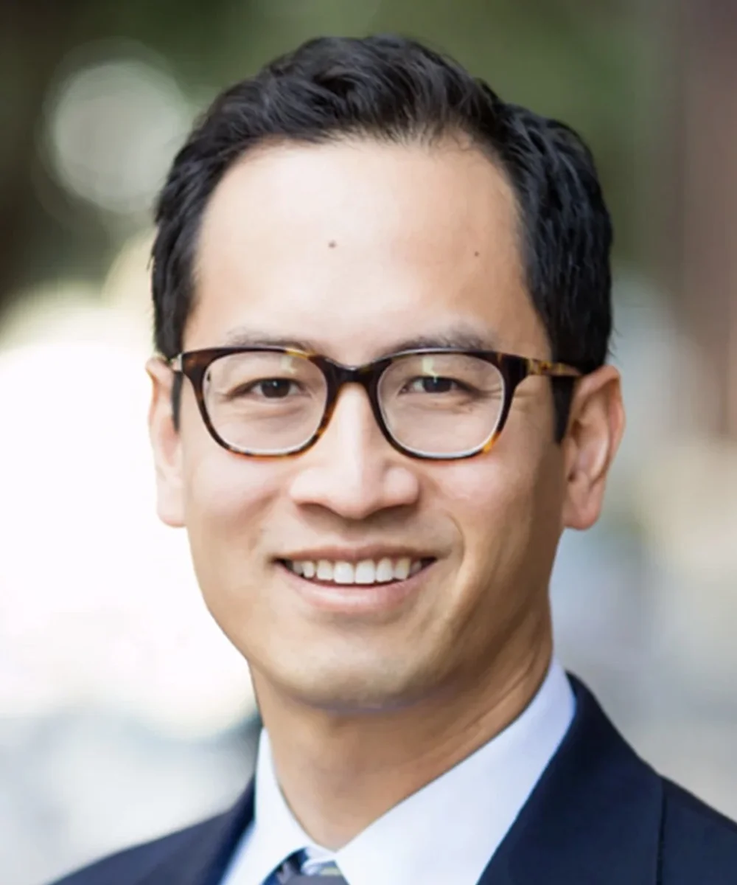

Edward Chang, MD
A founding director of CNEP, Dr. Edward Chang is Department Chair for Neurological Surgery at UCSF. His wide-ranging and impactful research has revealed critical aspects of the brain's ability to understand and produce language, and he has helped to pioneer real-time decoding of the brain's speech signals through brain-computer interfaces for those who have lost the ability to communicate. His research program has also helped to advance closed-loop neuromodulation approaches for the treatment of severe neuropsychiatric disorders such as major depression and chronic pain.
As a neurosurgeon, Dr. Chang's clinical focus includes difficult-to-control epilepsy, brain tumors, trigeminal neuralgia, and movement disorders, with specialist expertise in advanced brain mapping methods to preserve crucial areas for speech and motor functions in the brain. He also has extensive experience with implantable neuromodulation devices to relieve seizure, movement, pain and other disorders.
Dr. Chang earned his medical degree at UCSF, where he also completed a residency in neurosurgery. He was honored with the Blavatnik National Laureate for Life Sciences in 2015. In 2020, he was elected to the National Academy of Medicine, an honor that recognizes outstanding achievements and service in the fields of medical sciences, health care and public health.